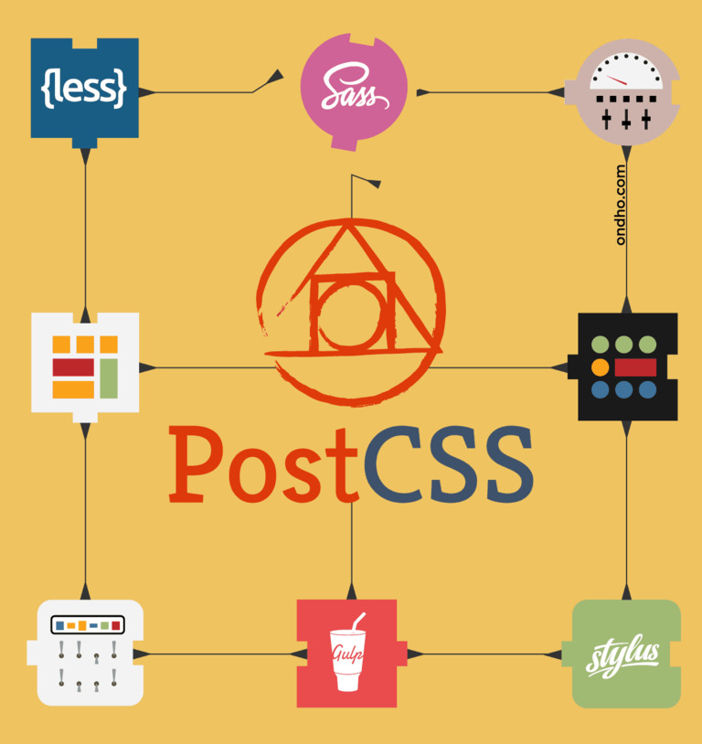

El equipo creador en su perfil de Github propone esta definición: "PostCSS es una herramienta para transformar CSS con plugins de JavaScript". Estos plugins pueden soportar variables y mixins, transpilar la futura sintaxis de CSS, imágenes en línea y más."
Por tanto, PostCSS se alimenta de CSS y lo transforma en una serie de datos que JavaScript puede manipular. Mediante plugins basados en JavaScript para CSS manipula el código. Pero PostCSS no cambia el código, solo hace que los plugins puedan cambiarlo. Con PostCSS no hay límites de manipulación
Lo que hace realmente especial a PostCSS es la enorme diversidad de plugins y las funcionalidades que ofrece. Hay, desde plugins para soportar antiguas o futuras sintaxis, hasta otros que gestionan colores o grids al estilo de Bootstrap, herramientas de optimización, plugins que añaden atajos, … Otra de las grandes peculiaridades que defienden los usuarios de PostCSS es que se trata de una herramienta modular, es decir, podemos utilizar los plugins que necesitemos, y los que no, no se cargan.
Las dos principales razones por las que PostCSS es más rápido que sus principales competidores son que, en primer lugar, carga en JavaScript, y en segundo lugar, que carga los plugins que le interesan al usuario, siendo posible cargar por ejemplo solo uno.
Puedes aprender más sobre PostCSS siguiendo este tutorial:
Ademas, la documentación oficial de PostCSS ofrece información muy completa para entender bien todas sus características. Puedes cosultar la página web haciendo click aquí.